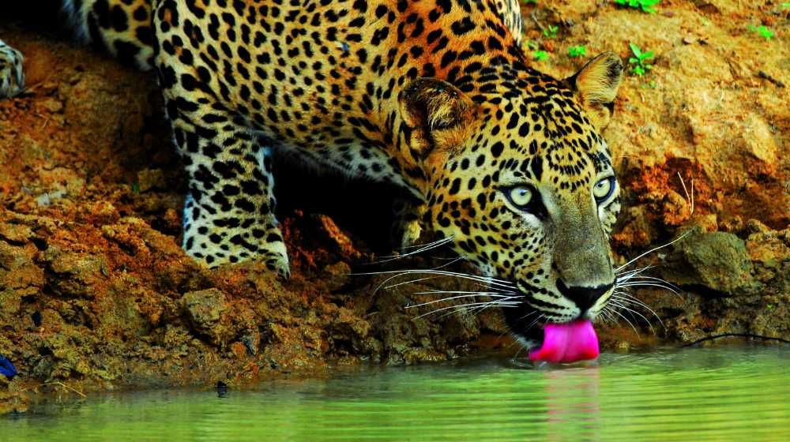

Wilpattu National Park
WILPATTU NATIONAL PARK
Wilpattu National Park is one of the oldest and largest national parks in Sri Lanka, located on the northwest coast of the island. Established in 1938, the park spans an area of approximately 1,317 square kilometers, making it the largest national park in the country. Wilpattu is renowned for its natural beauty, diverse ecosystems, and a rich variety of flora and fauna.Wilpattu National Park is a significant natural asset in Sri Lanka, attracting both local and international visitors seeking to experience the country's diverse wildlife and natural landscapes.
Established in 1938, Wilpattu boasts a rich tapestry of natural beauty, characterized by dense scrub jungles, open grassy plains, and numerous picturesque lakes known as "villus." This diverse landscape provides a habitat for a wide array of wildlife, including the celebrated leopard population for which Wilpattu is renowned. The park's ancient ruins and sacred sites add a cultural dimension to its appeal, offering a unique blend of natural wonders and historical significance. Visitors to Wilpattu National Park can embark on safari adventures, exploring its varied ecosystems, encountering Sri Lankan elephants, sloth bears, and an array of bird species. With its captivating scenery, cultural heritage, and abundant wildlife, Wilpattu National Park stands as a testament to Sri Lanka's commitment to conservation and provides a captivating destination for nature enthusiasts and wildlife lovers.
Here are some visitor tips and safari experiences to enhance your trip to Wilpattu
By following these tips and being mindful of the natural environment, visitors can make the most of their safari experience at Yala National Park and appreciate the incredible biodiversity it has to offer.
Safari Timings:
Wilpattu National Park is open from early morning until evening, with the best wildlife sightings during the cooler parts of the day. Morning and late afternoon safaris are recommended for optimal viewing.
Safari Vehicles:
Explore the park in safari jeeps accompanied by experienced guides who are familiar with the terrain. Their expertise enhances the wildlife spotting experience, providing valuable insights into the park's ecosystems.
Wildlife Sightings:
Wilpattu is renowned for diverse wildlife, including leopards, elephants, sloth bears, deer, and various bird species. Patience is key during safaris, as animal activity can vary, and specific times may offer better sightings.
Leopard Safaris:
Early morning and late afternoon safaris increase the likelihood of spotting leopards, contributing to the park's reputation as a destination for leopard enthusiasts.
Villus Exploration:
Explore the park's unique landscape, characterized by numerous lakes or "villus." These water sources attract a variety of wildlife, providing excellent opportunities for birdwatching and observing different species.
Cultural Heritage Sites:
Beyond its wildlife, Wilpattu boasts historical and cultural significance with ancient ruins and sacred sites. Some safaris may include visits to these areas, adding a cultural dimension to the wildlife experience.
Quiet Observation:
Maintain minimal noise levels during the safari to avoid disturbing wildlife. Quiet observation allows for a more natural and immersive experience, fostering a connection with the surroundings.
Binoculars and Cameras:
Bring binoculars and a camera with a zoom lens to get closer views of wildlife and capture memorable moments. Ensure your camera is adequately charged and has sufficient storage space.
Respect Park Rules:
Adherence to park regulations is crucial, including staying within designated safari tracks, respecting natural habitats, avoiding littering, and maintaining a respectful distance from wildlife.
Accommodations:
Various accommodation options, from luxury resorts to eco-friendly lodges, are available near Wilpattu National Park. Advance bookings are advisable, especially during peak seasons, to secure preferred lodging.
Weather Considerations:
Be prepared for varying weather conditions influenced by both the northeast and southwest monsoons. Understanding the impact of weather patterns on wildlife behavior enhances the overall safari experience.
.jpg)